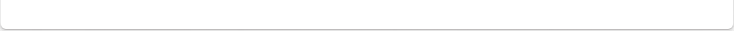

热点新闻
视频
成功案例
新闻
新闻
天时通应微软邀请参加Windows 7北京发布会
2010-09-25
009年10月23日，微软在北京尤伦斯当代艺术中心正式向中国地区发布了新一代视窗操作系统：Windows 7。
天时通应微软邀请参加Windows 7北京发布会
2010-09-25
009年10月23日，微软在北京尤伦斯当代艺术中心正式向中国地区发布了新一代视窗操作系统：Windows 7。
天时通应微软邀请参加Windows 7北京发布会
2010-09-25
009年10月23日，微软在北京尤伦斯当代艺术中心正式向中国地区发布了新一代视窗操作系统：Windows 7。
视频
天时通产品展示视频链接
>>点击播放
天时通产品展示视频链接天时通产品展示视频链接
>>点击播放
天时通产品展示视频链接
>>点击播放

成功案例
1、移动电子商务中心
2、招商银行行史陈列馆
3、上海世博园铁道馆
4、苏州科技文化中心――金鸡奖展厅
5、厦门奥林匹克博物馆
6、大庆油田科技馆
7、深圳礼品展
8、第十一届中国国际高新技术成果
交易会
9、广州创意展
10、文博会
11、2008深圳春季房地产交易会
12、龙岩博物馆
13、上海图书展
14、2008国际消费品类电子产品
展览会暨深圳光电显示周
15、成都双流规划馆
16、东盟博览会
17、张家港文化中心规划馆
18、成都新都规划馆
19、深圳芬怡内衣
20、深圳中信地产――08年秋交会
热点新闻